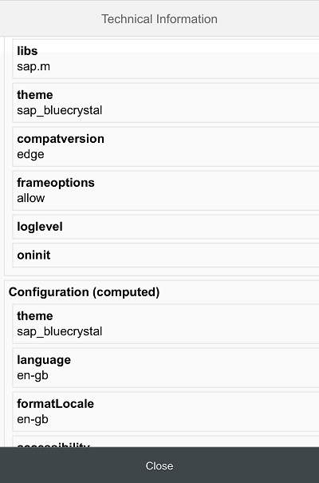

Technical Information Dialog
Technical Information Dialog
To open the technical information dialog from within a supported desktop browser, use the following shortcut:
Ctrl Shift Alt / Option P
The dialog contains the following information:
The version number of the currently loaded SAPUI5 distribution and the underlying OpenUI5 version that represent the core libraries of the framework and their build timestamps
For more information, see Versioning and Maintenance of SAPUI5 and SAPUI5 vs. OpenUI5
The user agent that is used for detecting the device's capabilities and device adaption
The root URL of the currently loaded app
You can download the technical information, so that you can attach it to a ticket for example, by clicking Copy.
Loading Debug Sources
Loading Debug Sources
For debugging, you first have to load the Debug Sources. You have the following options:
URL parameter
sap-ui-debug=trueSelect the Use Debug Sources in the Technical Information Dialog
For more information, see Technical Information Dialog.
If you only want to load the debug sources for specific packages, you have the following options:
Add the module names to the
sap-ui-debugURL parameter, separated by a comma. For example,sap-ui-debug=sap/ui/core/Core.js,sap/m/InputType.jsloads the debug sources for thesap.ui.core.Coreandsap.m.InputTypelibraries.Choose the Select specific modules link in the Technical Information Dialog.
For more information, see Technical Information Dialog.
After reloading the page, in the Network tab of the browser’s developer tools you can see that the controls and framework assets are now loaded individually and have a -dbg suffix. These are the source code files that include comments, the uncompressed code of the app, and the SAPUI5 artifacts.
Choose Ctrl O (Windows) or Command O (macOS) and type the name of an SAPUI5 artifact to view its source code in debug mode.
Turning on debug sources also increases the log level. For more information, see Logging and Tracing.
To improve performance, you must deactivate the debug sources once you're done with debugging.
Technical Information Dialog on Mobile Devices
Technical Information Dialog on Mobile Devices
- Configurations (bootstrap) - Displays a list of bootstrap parameters.
- Configurations (computed) - Displays a list of computed parameters.
- URI parameters - Displays the variables passed from the URI query string.
- End-to-End Trace - A function that traces communication to a different part of the app.
- Loaded Libraries - Displays a list of the currently loaded libraries.
- Loaded Modules - Displays a collapsible list of the currently loaded modules.
 |  |
 |
Accessing the Technical Information Dialog on Mobile Devices
To open the Technical Information dialog on your mobile device, proceed as follows:
- Press two fingers on a noninteractive screen area (for example, a blank area) for at least 3 seconds.
- Tap with a third finger while holding the other two on the screen.
- The Technical Information dialog can only be opened on mobile devices that support multi-touch.

Using the End-to-End (E2E) Trace Function
The E2E Trace is used to create an XML file that traces the communication to a different part of your app.
To start the E2E Trace, proceed as follows:
- Select the detail level from the Trace Level dropdown list.
- Choose Start.
- Navigate to a different part of the application.
As a result, a dialog box opens indicating that your transaction has finished. Choose OK to continue running the current trace. Choose Cancel to stop the trace and display the result in a new window.
After stopping the trace, you can view the result and (optionally) upload it to a server by entering a host name and a port number, and then choosing Submit.
The result of the last completed trace is also visible in the XML Output field when you open the Technical Information dialog again.